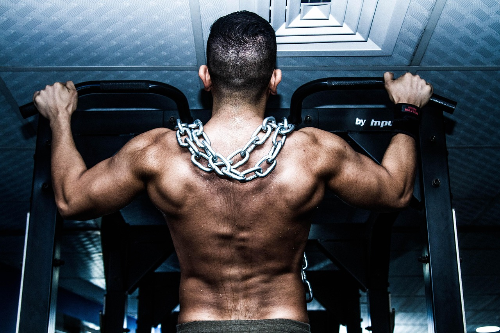
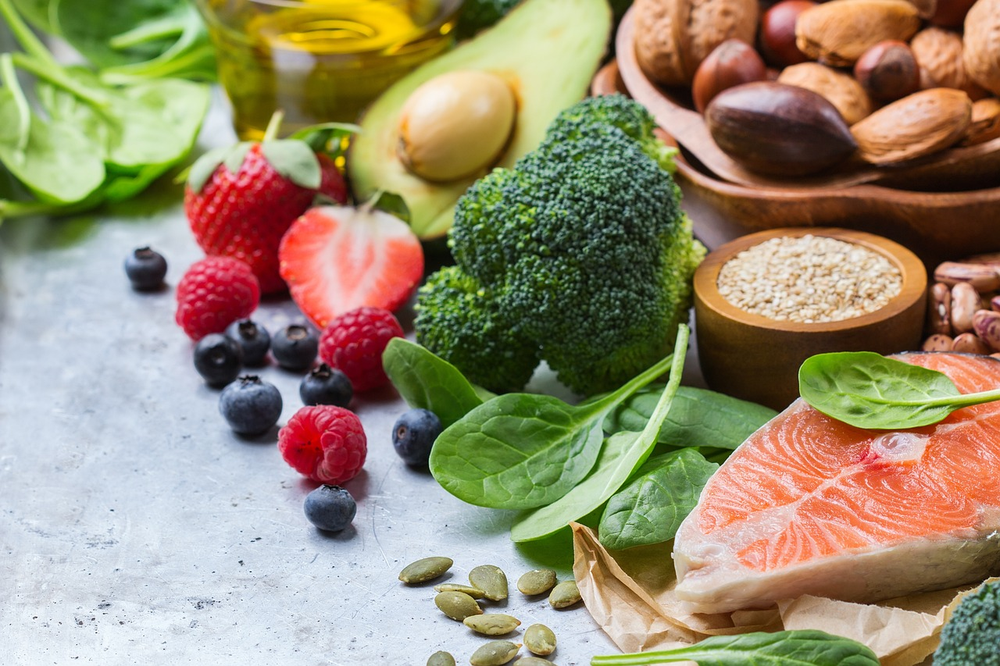
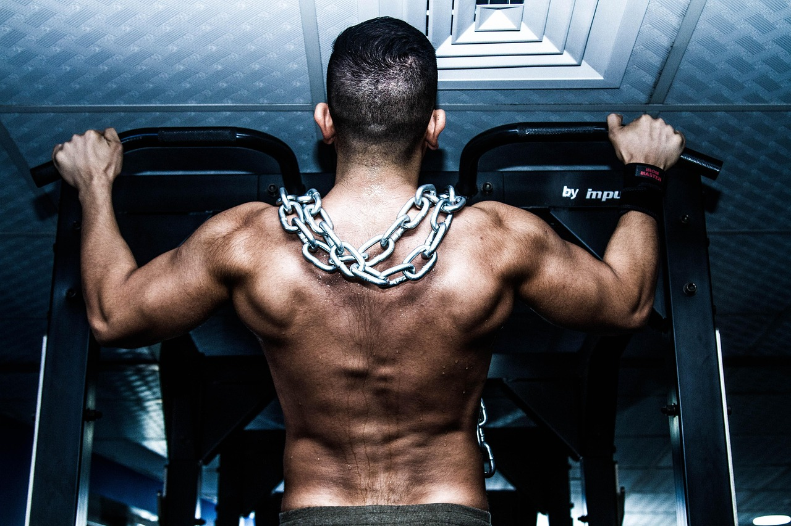
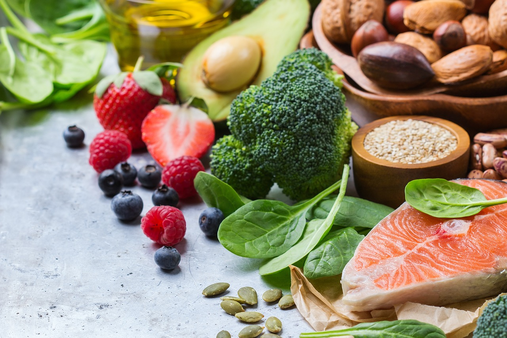

My Chest/Back Day Workout Plan
Greetings! I'm one of those fitness enthusiast, so what I'm going to share here is the workout routine for my Chest/Back day.
I think it's very time consuming for me to gather all the information require to construct my own workout routine which allows the well-rounded development
for each muscle groups due to plenty of exercise variation out there. Note that you could check some other variations here from this link:
Other Exercise Variations for Chest and Back
However, after weeks of research, I came up with this workout routine for Chest/Back day (you could split using other variations).
I prefer using free-weight, so most of the exercise would involve a pair of dumbbells
To cover most of the muscles in chest/back, I also include some machine exercises. Here's the lists.
Chest Workout
- Dumbbell bench press
- Dumbbell incline press
- Dumbbell chest fly
- Machine pec fly
Back workout
- Pull up
- Wide-grip lat pulldown
- Close-grip lat pulldown
- Dumbbell bent over row
- Seated Cable row
 



By doing each for 3 sets at 8-12 reps with 1 minute rest between sets of isolation exercises and 2 minute rest for compound exercises,
it's possible that you would see some gains after a month. However, it's important to work other muscle groups as well (shoulders, arms, legs, etc.)
and incoporate with cardio, good diet, and good sleep to gain some decent physiques.
Thanks for visiting and spending your time checking my website for final project in WD4E HTML course and good luck at whatever you do.